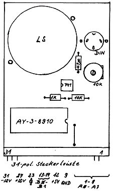

Nascom Journal |
Juni 1981 · Ausgabe 6 |

Um die obigen Programme ausprobieren zu können, muß natürlich zuerst die Hardware vorhanden sein. Ich habe sie hier ans Ende gestellt, weil es sich beim Nachbau wirklich um einen Klacks handelt. Weiter unten finden Sie eine Schaltung, die den PSG (Programmable Sound Generator) an das PIO des Nascom anschließt. Falls die Nachfrage besteht, könnten wir Ihnen eine fertige Platine zuschicken. Schreiben Sie uns diesbezüglich.
Die Schaltung ist so konzipiert, daß die Töne sowohl über einen Lautsprecher als auch über eine Verstärkeranlage abgenommen werden können. Das Trimmpoti sollte auf minimale Verzerrung eingestellt werden.
Und nun wünsche ich viel Spaß beim Bau und Test des PSG-Interfaces. (Es hat übrigens die gleiche „Busbelegung“ wie der AD/DA-Wandler aus Heft …?).
Im nächsten Heft
möchte ich dann über die Programmierung des
Hüllkurvengenerators, des Rauschens und des Enable Registers berichten.
(Hierbei bin ich selbst noch am Experimentieren, um brauchbare d.h. in
der Praxis verwertbare Ergebnisse zu erhalten.
Unbedingt beachten: Bei Benutzung des normalen PIO auf der Grundplatine müssen Sie die Portadressen der obigen Programme ändern.
|
60 ≙ 04 |
G. Böhm |
| Seite 6 von 20 |
|---|